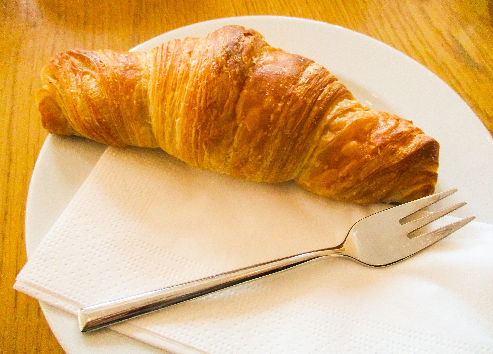

Croissants
Crescent-shaped breads have been made since the Renaissance, and
crescent-shaped cakes possibly since antiquity. Croissants have long been
a staple of Austrian, Italian, and French bakeries and pâtisseries. The
modern croissant was developed in the early 20th century.
